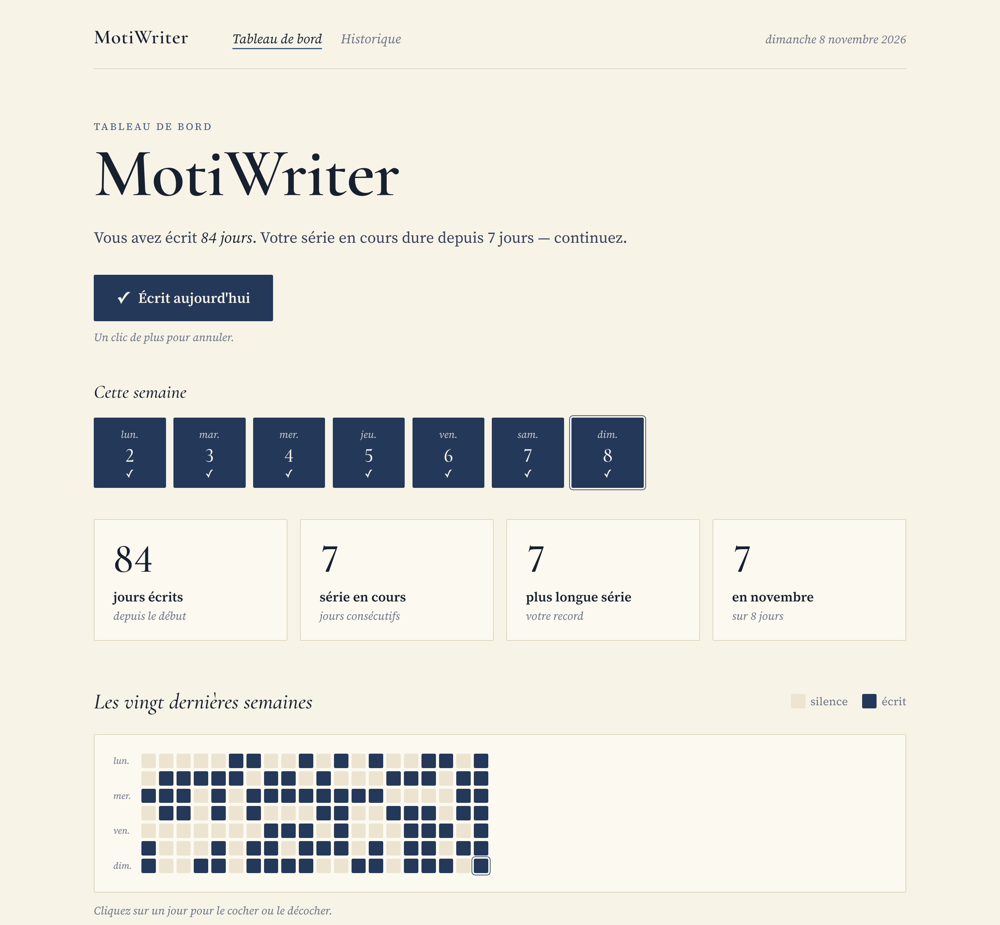

Les auteurs en chemin
Celles et ceux qui écrivent un roman, des nouvelles ou des poèmes, et veulent tenir sur la durée.
Une petite application pour écrire
Écrire un peu, souvent.
MotiWriter aide à garder l'envie d'écrire en vous montrant ce que vous avez déjà accompli. Vous notez simplement les jours où vous avez écrit — quelques mots suffisent — et un tableau de bord vous montre le chemin parcouru.

Écrire régulièrement compte plus qu'écrire beaucoup. Quelques phrases chaque jour entretiennent l'habitude ; et voir le chemin parcouru donne envie de continuer.
MotiWriter ne compte pas les mots et ne fixe pas d'objectifs. Il se contente de constater et d'encourager : un jour est écrit, ou il ne l'est pas. Les jours sans écriture ne sont pas des échecs — dans le calendrier, ils s'appellent simplement silence.
« Quelques mots aujourd'hui suffisent à relancer la série. »
Celles et ceux qui écrivent un roman, des nouvelles ou des poèmes, et veulent tenir sur la durée.
Pour qui tient un journal, un carnet de bord ou un blog, et aimerait y revenir plus souvent.
Mémoire, thèse, documentation : les projets où l'on avance un peu chaque jour.
Pour qui les objectifs de mots sont devenus une pression plutôt qu'un moteur.
Où vous voulez, ce que vous voulez. Quelques mots suffisent.
Un clic sur la case « Aujourd'hui », sans chiffre à saisir. Un oubli ? Un clic sur le jour passé, dans la bande des huit derniers jours ou dans le calendrier.
Jours écrits, séries, record, et un calendrier qui remplit tout l'écran : ce que vous avez déjà accompli. Chaque modification reste dans l'historique, mois par mois.
MotiWriter est jeune mais utilisable : on note ses jours, ils sont enregistrés, et chaque modification est gardée dans un historique. Les statistiques sont encore provisoires.
La feuille de route détaille les étapes.
Le code est public sur GitHub : github.com/ymauray/motiwriter.
L'application est écrite en .NET 10 avec une interface Blazor. Le métier est séparé de l'interface, pour pouvoir l'exposer plus tard en API REST et en serveur MCP. Pour la lancer en local, il suffit du SDK .NET 10 :
git clone https://github.com/ymauray/motiwriter.git
cd motiwriter
dotnet run --project src/MotiWriter.Web --launch-profile http
# → http://localhost:5006Pour aller plus loin : objectif, architecture, charte graphique.